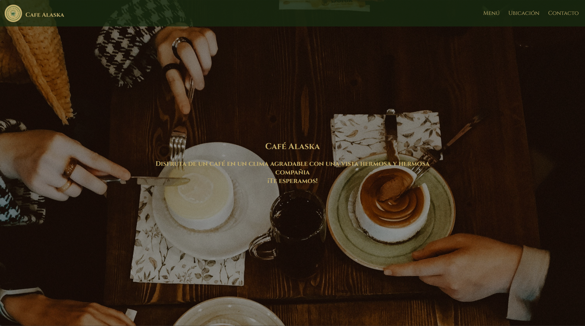
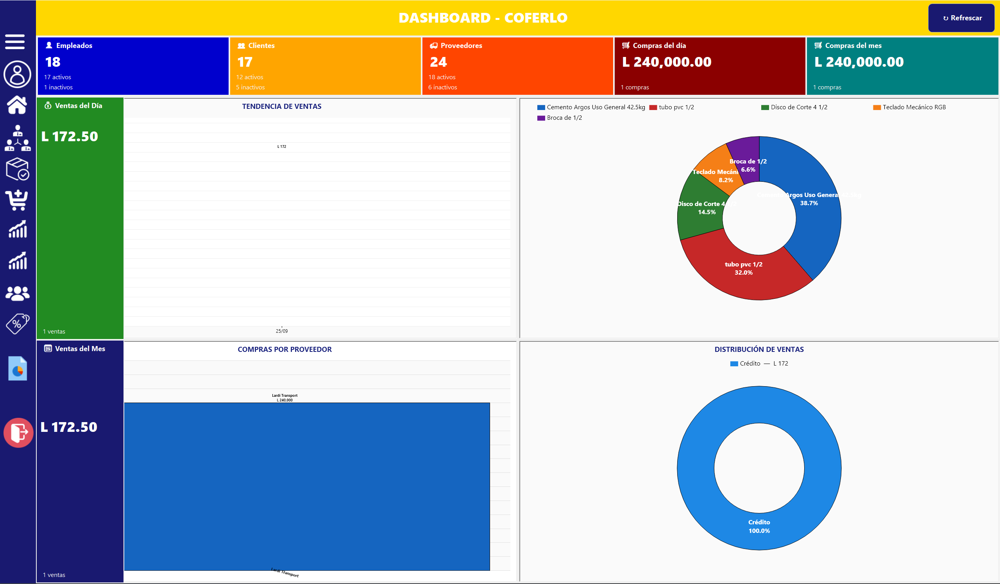
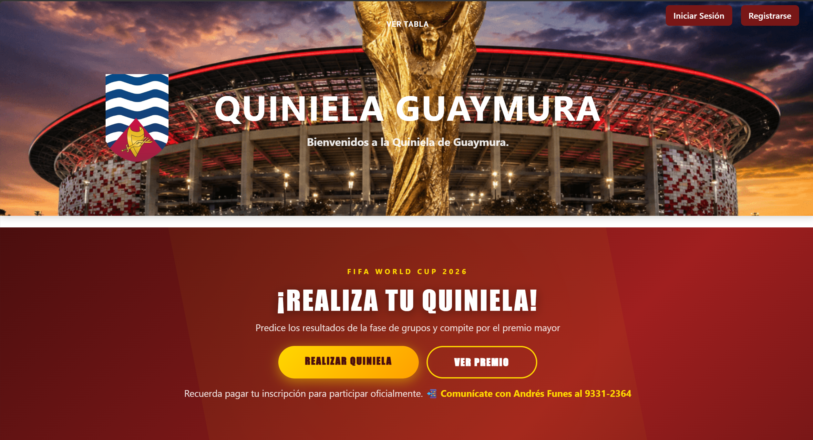
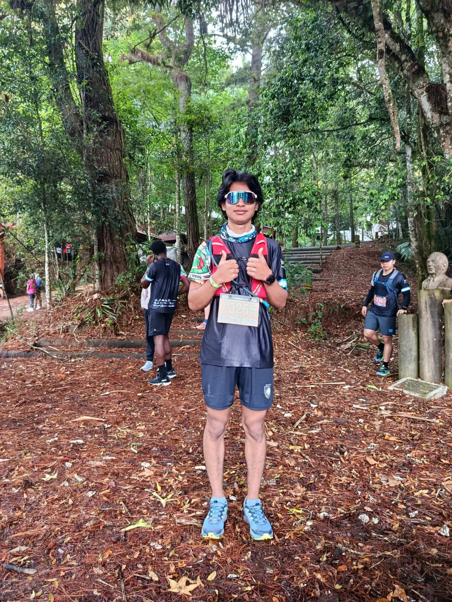

Mi nombre es Josue Mata, soy estudiante de
la carrera computer science engineering de la
universidad catolica de honduras.
Mi nombre es Josue Mata, soy estudiante de
la carrera computer science engineering de la
universidad catolica de honduras.

Este fue un proyecto personal pensando en un menu de una cafeteria teniendo pensado un diseño elegante tambien se tiene pensado hacer un sistema de escritorio para el manejo de venta y entrada del producto.
Ver proyecto
Este fue un proyecto desarrollado para la clase de desarrollo de software, fue hecho para una ferreteria con mis compañeros el proyecto cuenta tambien con un face id recognizer.
Ver proyecto
Este fue un proyecto fue desarrollado para un evento de la organizacion llamada guaymura para poder hacer una rifa para el mundial se desarrollo con mi compañero Joseph Martinelli.
Ver proyecto
Soy estudiante de Ingeniería en Sistemas en la Universidad Católica de Honduras (UNICAH), con experiencia en desarrollo web, ingeniería de software y bases de datos a través de proyectos de clase. Estoy armando este portafolio para empezar a trabajar.
¿Tenés un proyecto en mente? Escribime.